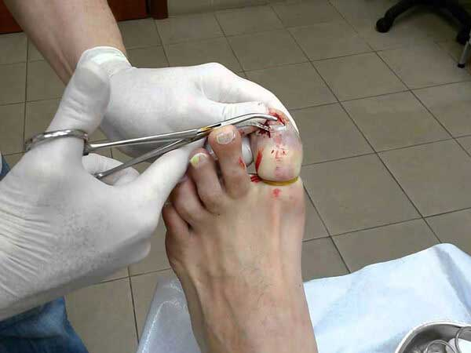
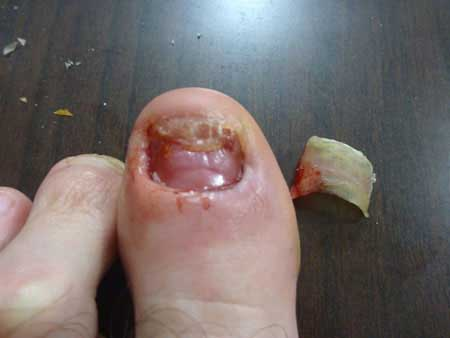
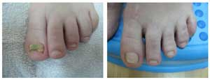
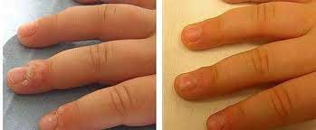

Domowy zestaw pierwszej pomocy
Zdrowie i uroda - ludowe sposoby
UKRYTE ZAGROŻENIE: POZNAJ STRASZLIWĄ PRAWDĘ O GRZYBICY, ZANIM STRACISZ SWOJE PAZNOKCIE!
Cześć, nazywam się Suzanne i pochodzę z Liverpoolu.
Trzy lata temu mój
mąż stał się ofiarą pozornie nieszkodliwej choroby znanej jako grzybica paznokci !
Wielu ludzi jest zakażonych mniej poważną formą tej grzybicy paznokci i nawet nie zdaje sobie z tego sprawy!
Nie są też świadomi możliwych konsekwencji. A opierając się na naszym doświadczeniu, mogę powiedzieć, że te konsekwencje są PRZERAŻAJĄCE.
Wszystko zaczęło się tak niewinnie, że nawet nie zwracaliśmy uwagi na to!
Zakażenie grzybami może ujawnić się w dowolnym momencie . Stres, typowe przeziębienie, osłabiona odporność. W przypadku mojego męża to było tak: złapał przeziębienie, a tydzień później zaczęliśmy zauważać pierwsze OBJAWY :
- Jego stopy zaczęły go swędzieć, zwłaszcza gdy wkładał je do wody
- Jego skóra zaczęła się łuszczyć
- Jego stopy zaczęły wydzielać nieprzyjemny zapach
- Jego paznokcie stały się żółte, a palce zaczęły go boleć.
Stopa mojego męża po "leczeniu" maścią z apteki
JEŚLI KIEDYKOLWIEK ZAUWAŻYSZ TAKIE SYMPTOMY, NIE SZUKAJ WYMÓWEK - W 95% PRZYPADKÓW OZNACZA TO, ŻE WYHODOWAŁEŚ GRZYBA I POWINIENEŚ NIEZWŁOCZNIE ZADZIAŁAĆ!
Mój mąż nie zrobił tego od razu - ale ja już myślałam o możliwych konsekwencjach i zastosowałam maść salicylową na paznokcie jego stóp.
"Nasze babcie tego używały, więc być może u nas teżto zadziała!"
Ta "jakaś" terapia nie zadziałała w jego przypadku, a po pewnym czasie zmuszono go do wizyty u lekarza. Doktor całkowicie usunął mu paznokcie .
Czy myślicie, że to zadziało?
Rok później jego paznokieć odrósł w pełni, Ale grzybica stała się znacznie gorsza !

Jego paznokcie wyglądały jak obrzydliwa masa. Prawie zwymiotowałam, kiedy je zobaczyłam, a on czuł się nawet jeszcze gorzej. Jego stopy były strasznie śmierdzące. LEKARZE W OGÓLE NAM NIE POMOGLI – jedyną rzeczą, którą zaproponowali było ponowne usunięcie paznokci.
Co za różnica, gdy grzyb i tak nawraca?
Powiem Wam wprost.
APTEKI NIE SPRZEDAJĄ PRODUKTÓW, KTÓRE SKUTECZNIE LECZĄ GRZYBICĘ..
Te produkty tylko ukrywają objawy lub po prostu "tymczasowo je tłumią", ale po jakimś czasie infekcja ponownie wraca. Pokażę Wam prawdę o wszystkich tych produktach, które lekarze przepisali mojemu mężowi. Wydaliśmy fortunę na te produkty , ale TO WSZYSTKO NIE BYŁO WARTE ZŁAMANEGO GROSZA
Opcja A – leki ogólnoustrojowe
Te leki "niszczą" grzyba, ale nikt Ci nie powie, jak szybko mogą także zniszczyć wątrobę !
W rzeczywistości można porównać te leki do trutki na szczury używanej do zatruwania Twojego ciała - tyko po prostu stosuje się ją w mniejszych dawkach.
Opcja B – Krople i lakiery
Pomyślałam, że to jedyny sposób leczenia dla mojego męża, ale on dostał po tym STRASZLIWEJ REAKCJI ALERGICZNEJ . Jak się potem okazało, nie jest to niczym niezwykłym, ponieważ od razu po tym, jak ktoś zacznie nakładać na stopy produkt przeciw grzybom organizm traktuje to jako próbę zatrucia go . Niektórzy ludzie są po prostu bardziej wrażliwi, inni mogą wytrzymać dłużej.
ICzytałam artykuły w internecie i rozmawiałam z osobami zarażonymi grzybem. Większość z nich miała tę samą reakcję, co mój mąż, JEDNAK TE LEKI SĄ NADAL W SPRZEDAŻY !!!
Podczas zażywania tych produktów musiał także opierać się na lekarstwach antyhistaminowych z przepisu lekarza , I to wszystko zakończyło się pobytem w szpitalu z powodu zatrucia ! Dzięki Bogu wszystko się skończyło dobrze, ale i tak nie pomogło nam w walce z grzybem. Zasugerowano nam, abyśmy ponownie spróbowali ludowych sposobów zaradczych !
Medycyna ludowa! Dla faceta, który ma paznokieć wyglądający tak, jak ten! I to ma być opieka zdrowotna w XXI wieku?
Mój mąż nie mógł już znieść bólu, więc po prostu sam wyrwał sobie płytkę paznokcia.
Nasza historia nie jest jedyną w swoim rodzaju. Zauważyłam wiele osób w szpitalu z grzybicą zarówno rąk, jak i nóg! Ponadto ci ludzie to byli zarówno mężczyźni, jak i kobiety, młodzi i starzy.
JAK WYLECZYĆ SIĘ Z GRZYBICY?
Od samego początku zrozumiałam, że oprócz mnie samej, Nikt inny nie pomoże mojemu mężowi. Przeczytałam wiele informacji na temat grzybicy i w pewnym momencie szukałam nawet Informacji o wszystkich etapach grzybicy online i tego, jak leczyć ją w cywilizowanym świecie .
Okazuje się, że kraje zachodnie używają JEDYNEGO BEZPIECZNEGO produktu przeciw grzybom dostępnego na rynku - nazywa się on . Uważa się, że jest najbardziej skutecznym produktem przeciwgrzybicznym dostępnym na rynku. Nikt nie importuje go do Polski (oczywiście polska mafia lekowa przejęła wszystkie apteki i zasypała je swoimi nieskutecznymi i szkodliwymi produktami).
Przeczytałam szczegółowo wszystkie badania, studia przypadków i ankiety, i doszłam do wniosku, że ten produkt oferuje kilka efektów:
- Usuwa wszelkie znane i szkodliwe formy grzybów.
- Łagodzi świąd, ból i podrażnienie.
- Dezynfekuje ze 100% skutecznością.
- Lokalizuje obszary zapalenia (zapobiega rozprzestrzenianiu się infekcji).
- Regeneruje komórki uszkodzone przez infekcję.
- Usuwa zapach wywołany infekcją.
- Skóra otrzymuje niezbędne odżywienie - co ułatwia walkę z zakażeniem

TUTAJ MOŻESZ DOWIEDZIEĆ SIĘ WIĘCEJ O >>> Oficjalna strona internetowa
Składniki produktu przeciwgrzybicznego GWARANTUJĄ pełne bezpieczeństwo. Produkt nie ma efektów ubocznych ! Zawiera tylko naturalne składniki , które się wzajemnie wzmacniają. Ten połączony efekt pozwala na całkowite wyleczenie choroby.
Z tego powodu może być używany przez osoby w każdym stadium infekcji.
Grzybica paznokci – tylko jeden z powodów użycia . Jest również odpowiedni do leczenia najbardziej znanych infekcji grzybiczych , takich jak liszaj.
Dzięki Bogu, że znalazłam oficjalnego dostawcę na Polskę. Od razu zamówiłem produkt i w ciągu czterech dni paczka przybyła do naszego domu.
Zaczęliśmy od aktywnego leczenia zaawansowanego etapu zakażeń grzybiczych mojego męża . – TO NASZE PRAWDZIWE ZBAWIENIE ! Nie mam pojęcia, jak długo musiałby się ZMAGAĆ z chorobą, jeśli nie znalazłabym tego produktu. Mój mąż wyleczył się w ciągu kilku tygodni, a w ciągu miesiąca jego zaawansowana infekcja grzybicza całkowicie zniknęła. Po raz pierwszy po długim okresie (aż 2,5 roku).
Zauważyliśmy także, że rosną mu teraz gładkie, czyste i zdrowe paznokcie !

Podsumowując, MOJE ZALECENIE DLA KAŻDEGO, KTO ZMAGA SIĘ Z TYM HORROREM jest następujące:
NIE TRAĆCIE CZASU NA BEZUŻYTECZNE LECZENIE ! I nie czekajcie, aż zakażenie rozwinie się do zaawansowanego etapu - usuwanie paznokci pozostanie wtedy jedynym rozwiązaniem.
Podaję kontakt z dostawcą w celu zapobiegania chorobie (zaufajcie mi: lepiej nie mieć tego problemu u siebie) . Ten dostawca dostarczył mi produkt, który pomógł nam natychmiast - tu są oficjalne strony dostawcy :
Wszystkie certyfikaty są dostępne w internecie - sprawdziłam je dwa razy. Nie mam nic więcej do powiedzenia, ponieważ produkt jest w 100% skuteczny i bezpieczny A wyniki mówią same za siebie!
Zadbajcie o siebie i swoje zdrowie.
Mam nadzieję, że Wam pomogłam!

